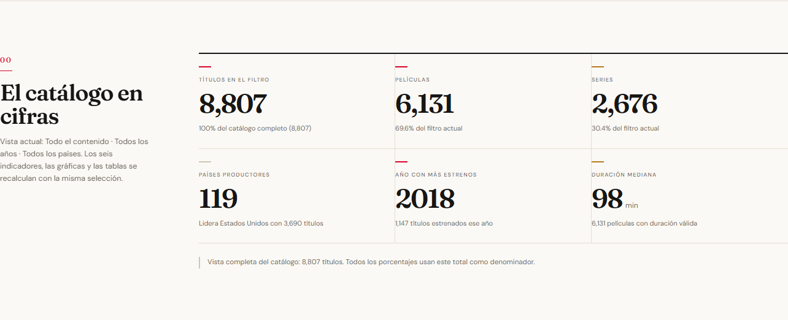
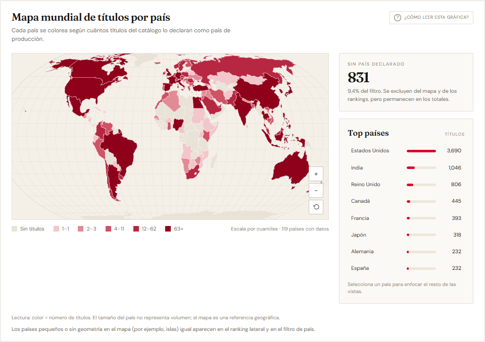
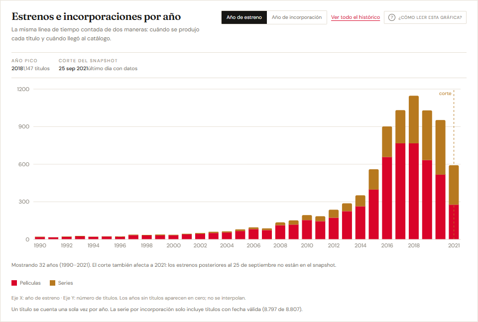
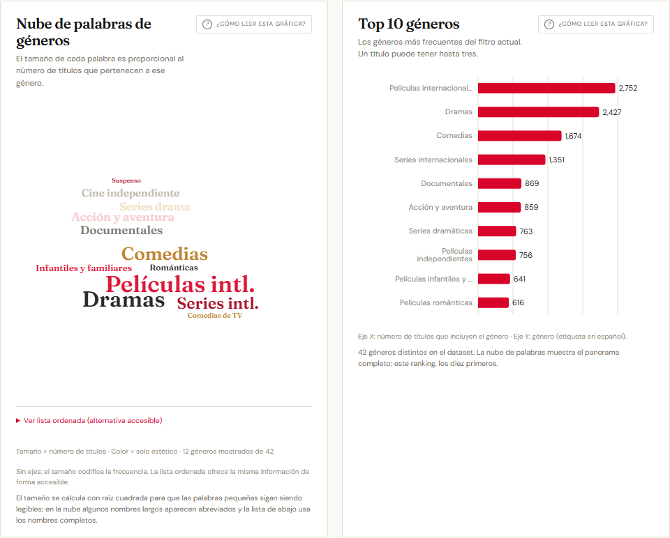

Visualización de datos · Proyecto 3Informe de diseño · 02/11/2026
Del dato al tablero
La economía del entretenimientoNetflix y tendencias globales
Cómo se diseñó un tablero para leer la composición y la evolución del catálogo de Netflix: para quién es, qué problema resuelve, cómo se prepararon los datos y por qué el tipo de tablero elegido es el táctico.
01 · Audiencia
Tres perfiles con decisiones y niveles de detalle distintos: analista, docencia y público general.
02 · Objetivo
Comparar la composición del catálogo por país, año, género y formato con un denominador consistente.
03 · Tipo de tablero
Táctico: compara, prioriza y argumenta. No opera la plataforma ni promete predicciones.
Tesis del proyecto
“El tablero no mide cuánto gana Netflix; mide qué decide mostrar y desde dónde.”
Equipo
Jonathan Alexander Gonzalez Romero
Docente
Jessica Carmin Mendiola Fuentes
Tema
Negocios y cultura digital
Fuente
Kaggle · shivamb/netflix-shows
Corte del catálogo
25 de septiembre de 2021
Entregable
Tablero web + informe PDF
Catálogo en foco · Informe de diseño y justificación12 páginas · Español (México)
Catálogo en focoÍndice
00
Contenido del informe
Índice
El informe sigue el orden de las decisiones de diseño: primero la audiencia y el objetivo, después el tratamiento de los datos y, al final, la elección del tipo de tablero con su justificación y su evidencia visual.
01
Análisis de la audiencia
Quién usa el tablero, qué decide y con qué nivel de detalle.
3
02
Definición de objetivos
Problema, pregunta, objetivo general y ejemplo de uso.
4
03
Preprocesamiento · variables
Identificación de campos, roles y variables derivadas.
5
04
Preprocesamiento · limpieza
Faltantes, duplicados y criterios de atípicos.
6
05
Preprocesamiento · integración
Tablas puente, normalización y modelo analítico.
7
06
Selección del tipo de dashboard
Comparación entre operativo, táctico y estratégico.
8
07
Justificación del tipo elegido
Por qué el tablero es táctico y cómo se refleja en la interfaz.
9
08
El tablero
Evidencia visual de la portada y del panel de indicadores.
10
09
Visualizaciones y lectura
Mapa, tiempo y géneros: qué muestra cada vista.
11
10
Cierre, límites y referencias
Alcance, reproducibilidad y conclusiones.
12
Cómo leer este informe. Cada sección responde una pregunta de diseño y termina con una decisión concreta. Las cifras provienen del mismo ETL que alimenta el tablero; no se agregaron datos externos.
Resumen en una frase. El tablero es táctico: ayuda a comparar la composición del catálogo por país, año, género y formato para orientar decisiones de planeación de contenido, no para operar la plataforma en tiempo real.
Catálogo en foco · Proyecto 3 · Visualización de datos2 / 12
Catálogo en foco01 · Análisis de la audiencia
01
Análisis de la audiencia
Para quién se construyó este tablero
El tablero no está pensado para especialistas en estadística ni para operar Netflix. Está pensado para personas que necesitan entender la composición del catálogo y argumentar una decisión de contenido con cifras verificables. Por eso conviven tres profundidades: el titular, la comparación y el detalle.
A
Analista de catálogo y planeación de contenido
Revisa qué produce Netflix, desde dónde y con qué mezcla de formatos antes de proponer ajustes o preguntas de investigación.
Decide
Qué país, género o formato conviene mirar con más atención y qué comparación vale la pena profundizar.
Detalle requerido
Alto: cifras exactas, filtros combinables y denominadores explícitos.
B
Docencia y coordinación académica
Busca un caso real para enseñar visualización, lectura de datos y límites del análisis, sin tener que construir el ETL desde cero.
Decide
Qué evidencia llevar al aula, cómo explicar el método y qué límites discutir con el grupo.
Detalle requerido
Medio: definiciones claras, notas metodológicas y trazabilidad de cada cifra.
C
Público interesado y estudiantes
Quiere formarse una idea del fenómeno sin leer una tabla de 8,807 filas ni conocer conceptos de estadística.
Decide
Si el tema le interesa, qué historia contar y qué explorar después por su cuenta.
Detalle requerido
Bajo: entrada narrativa, lenguaje cotidiano y ayudas breves por gráfica.
Usuarios, decisiones y nivel de detalle
Perfil
Decisiones que toma
Nivel de detalle
Cómo lo resuelve el tablero
Analista de catálogo
Priorizar mercados y géneros; detectar cambios de mezcla; comparar periodos.
Agregado, filtrable y con cifras exactas.
KPIs, mapa, rankings, series temporales y tablas con tooltips.
Docencia
Elegir evidencia; explicar el método; discutir alcances y sesgos.
Medio, con contexto metodológico.
Ayuda “cómo leer” en cada tarjeta, sección de método y notas de límites.
Público general
Entender la composición; decidir si el tema le interesa; explorar sin rumbo fijo.
Bajo, guiado y sin jerga.
Portada editorial, cuatro gestos de uso y hallazgos redactados en lenguaje claro.
Qué implica esta audiencia en el diseño
La misma página debe permitir una lectura de treinta segundos (titular y KPIs), una de tres minutos (comparaciones y filtros) y una de quince minutos (tablas, ayuda y metodología). Esa convivencia explica la jerarquía editorial: primero el hallazgo, después la evidencia y al final el detalle. También explica lo que se dejó fuera: alertas en vivo, predicciones y microdatos por suscriptor, porque ninguna de las tres audiencias los necesita para tomar sus decisiones.
Cifras de referencia del catálogo completo: 8,807 títulos, 119 países y 42 géneros. La audiencia no requiere —ni el dataset permite— inferir ingresos o audiencia real.
Catálogo en foco · Proyecto 3 · Visualización de datos3 / 12
Catálogo en foco02 · Definición de objetivos
02
Definición de objetivos
Qué problema resuelve y qué decisión habilita
El objetivo no es “mostrar datos de Netflix”, sino responder una pregunta acotada con evidencia reproducible: ¿cómo se compone el catálogo y qué cambia cuando se mira por país, año, género y tipo de contenido?
Situación
El catálogo creció rápido y se volvió global: 8,807 títulos de 119 países.
Problema
La conversación pública usa impresiones (“produce mucho”), no cifras comparables por mercado y periodo.
Pregunta
¿Qué mezcla de formatos, géneros y orígenes tiene el catálogo y cómo cambió entre 1925 y 2021?
Decisión
Orientar la exploración y priorizar preguntas de contenido; no operar la plataforma ni predecir audiencia.
Objetivo general
Construir un tablero interactivo que permita explorar la composición y la evolución del catálogo de Netflix por tipo, país, año, género y clasificación, con un mismo denominador y con los límites del dataset explícitos.
Objetivos específicos
Describir la composición del catálogo por tipo de contenido, género, país y clasificación de edad.
Comparar periodos y mercados con filtros globales y un denominador consistente.
Hacer visible el método: qué se limpió, qué se excluyó y qué no se puede afirmar.
Permitir exploración autónoma sin perder trazabilidad entre la cifra y su cálculo.
Ejemplo de uso
“Quiero entender la mezcla antes de proponer un tema”
Una coordinadora de contenido necesita argumentar si el catálogo es principalmente de películas o de series, y si esa mezcla cambia por región. Abre el tablero, revisa el titular y los KPIs: 69.6% son películas y 30.4% series.
Después filtra por tipo y por país. El contador de títulos y todas las gráficas se recalculan con la misma selección; el mapa deja de ser un adorno y se vuelve un selector. Si un país tiene pocos títulos, el tooltip y la tabla le dicen cuántos son y qué porcentaje representan, en lugar de dejar que el color sugiera una conclusión exagerada.
La decisión no es “qué país es mejor”, sino qué comparación merece profundizarse y con qué evidencia puede sostenerse.
Criterios de éxito del tablero
Criterio
Meta
Cómo se verifica
Cobertura
Analizar el 100% del catálogo, sin muestreo.
8,807 títulos en el JSON y en el ETL.
Consistencia
Un mismo filtro alimenta todas las vistas.
KPIs, mapa, tiempo, géneros y tipo comparten el conjunto filtrado.
Legibilidad
Funcionar en escritorio y en 390 px sin scroll horizontal de página.
Prueba de regresión en 1440 px y 390 px.
Trazabilidad
Poder explicar cada cifra y cada exclusión.
quality_report.json, notas de método y ayuda por gráfica.
Accesibilidad
Ofrecer alternativas textuales y navegación por teclado.
Tablas equivalentes, aria-label y movimiento reducido.
Catálogo en foco · Proyecto 3 · Visualización de datos4 / 12
Catálogo en foco03 · Preprocesamiento
03
Preprocesamiento · identificación
Qué variable hace qué en el tablero
Antes de graficar se definió el papel de cada campo. No todos los datos sirven para lo mismo: unos identifican, otros describen dimensiones y unos pocos se convierten en métricas. Esta clasificación evita sumar unidades incompatibles o contar dos veces un título multivaluado.
Campo original
Tipo
Rol
Uso en el tablero
show_id
Identificador
Clave
Clave única de 8,807 títulos; 0 duplicados.
type
Categórico
Dimensión
Película o serie; alimenta KPIs, dona y filtros.
title
Texto
Contexto
Nombre visible en tablas y tooltips; no es clave.
director
Multivaluado
Dimensión
Ranking de directores; 29.91% sin dato, no se imputa.
cast
Multivaluado
Contexto
Se conserva como contexto; no entra en indicadores.
country
Multivaluado
Dimensión
Mapa, rankings y filtro por país o región.
date_added
Fecha
Dimensión temporal
Año y mes de incorporación; 10 nulos.
release_year
Entero
Dimensión temporal
Periodo de estreno y serie temporal.
rating
Categórico
Dimensión
Clasificación de edad; 7 sin dato tras corregir 3 filas.
duration
Texto
Métrica / dimensión
Minutos para películas; temporadas para series. Nunca se promedian juntos.
listed_in
Multivaluado
Dimensión
Hasta 3 géneros por título; 42 etiquetas distintas.
description
Texto
Contexto
Sinopsis; no se usa en las visualizaciones.
Variables derivadas
added_yearAño de incorporación extraído de date_added.
added_monthMes de incorporación para la lectura estacional.
duration_minMinutos de película; nulo en series.
seasonsTemporadas de serie; nulo en películas.
primary_countryPrimer país declarado; se usa para el filtro rápido.
regionAgrupación operativa en 6 regiones, propia del proyecto.
genresLista de géneros separada por comas y etiquetada en español.
has_directorBandera para separar títulos con y sin director acreditado.
Lo que el dataset no contiene
No hay variables monetarias ni de audiencia. El archivo no incluye ingresos, precios, costo de producción, suscriptores, horas vistas ni calificaciones de usuarios. Por eso el tablero no calcula rentabilidad, participación de mercado ni “éxito”.
Consecuencia de diseño: todas las métricas son de composición y conteo. Cuando una vista necesita una unidad distinta (minutos frente a temporadas), se separa en lugar de inventar un promedio conjunto.
Catálogo en foco · Proyecto 3 · Visualización de datos5 / 12
Catálogo en foco04 · Preprocesamiento
04
Preprocesamiento · limpieza
Faltantes, duplicados y criterios de atípicos
La limpieza se documenta antes de transformar. La regla general fue no inventar valores: cuando un dato falta, se reporta y se excluye solo de las vistas que lo requieren. Los casos extremos se marcan, pero no se borran, porque pueden ser legítimos.
Valores faltantes y tratamiento
Campo
Nulos
%
Tratamiento
director
2,634
29.91%
No se imputa; se excluye del ranking de directores.
cast
825
9.37%
No se usa en indicadores; se conserva como contexto.
country
831
9.44%
Se excluye del mapa y rankings; permanece en los totales.
date_added
10
0.11%
Sin año de incorporación; no se imputa.
rating
7
0.08%
3 se recuperaron desde duration; el resto queda “Sin dato”.
duration
3
0.03%
Minutos recuperados desde rating; 0 títulos sin duración tras la corrección.
Duplicados y anomalías corregidas
0 duplicados por show_id y 0 filas completas repetidas.
El título Consequences aparece dos veces con show_id distinto: no es un duplicado.
3 filas tenían la duración en rating (s5542, s5795, s5814): 74, 84 y 66 minutos. Se movieron a duration_min; su rating queda desconocido.
14 títulos registran incorporación anterior al estreno. Se conservan y se marcan; casi todos son series cuya release_year corresponde a la última temporada.
2,038 elementos multivaluados tenían espacios extra; se aplicó trim.
Criterio de atípicos
Para películas se calcularon los cercos de Tukey sobre duration_min: Q1 = 87 min, Q3 = 114 min, IQR = 27 min. Los cercos quedan en 46.5 y 154.5 minutos.
Para series se usó un criterio de dominio: más de 10 temporadas se marca para revisión, porque la mediana es 1 y el máximo es 17.
Decisión: los atípicos se conservan. Un cortometraje de 3 minutos o un documental de 312 minutos son formatos válidos, no errores. Se usan medianas e histogramas con intervalos para que los extremos no distorsionen la lectura.
Películas fuera de cerco201
3.3% de las 6,131 películas. Se marcan, no se eliminan.
Rango observado3–312 min
Solo 3 títulos superan los 240 minutos.
Series con más de 10 temporadas10
Se conservan; el máximo es 17 temporadas.
Por qué no se eliminan los extremos
Eliminar los valores fuera de cerco habría borrado títulos reales del catálogo y habría inflado artificialmente la “normalidad”. El tablero prefiere mostrar la distribución completa y usar medidas robustas: la mediana de películas es 98 minutos y el promedio, 99.6 minutos. La diferencia es pequeña, pero el criterio queda explícito para cualquier filtro posterior.
Los conteos de atípicos se recalcularon sobre el JSON del tablero (6,131 películas y 2,676 series). El detalle de nulos y normalizaciones vive en data/quality_report.json.
Catálogo en foco · Proyecto 3 · Visualización de datos6 / 12
Catálogo en foco05 · Preprocesamiento
05
Preprocesamiento · integración
Cómo se unieron las tablas sin inflar los totales
El CSV original guarda varios países, géneros y directores en una sola celda. Para analizarlos sin contar dos veces el mismo título, el ETL separa esos valores en tablas puente y conserva una tabla central con una fila por título. Esa decisión es la que permite que el mapa y los rankings sean comparables.
01 · CSV crudo8,807 filas y 12 columnas tal como se descargan de Kaggle.
02 · StagingDuckDB normaliza tipos, fechas, duración, países y géneros.
03 · Tablastitles más tablas puente de géneros, países, directores y reparto.
04 · SalidasParquet por tabla, base DuckDB y quality_report.json.
05 · Tablerodashboard.json compacto; React lo agrega en el navegador.
Tablas puente y cardinalidad
Tabla
Granularidad
Uso
titles
1 fila por show_id
Base de KPIs, tiempo y tipo.
title_genres
1 fila por título–género
1–3 géneros por título; nube y ranking.
title_countries
1 fila por título–país
1–12 países por título; mapa y rankings.
title_directors
1 fila por título–director
Hasta 13 directores; ranking.
title_cast
1 fila por título–actor
Contexto; no entra en indicadores.
Un título puede declarar hasta 12 países. La suma por país supera el total del catálogo; el denominador de los porcentajes sigue siendo el total de títulos.
Reglas de integración
Países históricos. West Germany y East Germany se agrupan en Germany; Soviet Union en Russia. Resultado: 119 países distintos.
País principal. El primer país declarado se marca como primary_country para el filtro rápido, sin perder la lista completa.
Géneros. Se conserva el nombre original en inglés y se agrega una etiqueta en español solo para la interfaz.
Regiones. La agrupación en 6 regiones es una clasificación operativa propia, no una norma de Netflix.
Denominadores. Los porcentajes de género y país usan el total de títulos del filtro; por eso pueden sumar más de 100%.
La prueba de que la integración funciona
El total del catálogo se mantiene en 8,807 títulos aunque un título declare varios países o géneros. Si se hubiera hecho un join directo sobre el CSV, cada título con 12 países habría aparecido 12 veces en los KPIs. Las tablas puente permiten contar títulos distintos y, al mismo tiempo, responder “cuántos títulos tienen este género” o “cuántos declaran este país”.
Integración externa. Solo se añadieron dos catálogos de apoyo, versionados en el repositorio: country_meta.json (nombre en español y región) y genre_labels.json (traducción de géneros). No se incorporaron cifras de audiencia, ingresos ni datos de terceros.
Catálogo en foco · Proyecto 3 · Visualización de datos7 / 12
Catálogo en foco06 · Selección del tipo de dashboard
06
Selección del tipo de dashboard
Operativo, táctico o estratégico
No existe un tipo de tablero mejor en abstracto. La elección depende del horizonte de la decisión, del usuario y del nivel de detalle que la pregunta exige. Comparar los tres tipos permite justificar por qué este proyecto no es un panel de monitoreo ni un cuadro de mando ejecutivo.
Criterio
Operativo
Táctico · elegido
Estratégico
Horizonte
Minutos u horas.
Semanas o trimestres.
Años.
Usuario típico
Operación y soporte.
Analista, coordinación de contenido, docencia.
Dirección general.
Pregunta
¿Qué está pasando ahora?
¿Cómo se compara y qué conviene priorizar?
¿Hacia dónde vamos?
Granularidad
Evento o registro individual.
Agregado filtrable por país, año, género y tipo.
Unos pocos indicadores globales.
Frecuencia
Tiempo real o casi real.
Actualización periódica por snapshot.
Anual o por ciclo estratégico.
Acción que habilita
Corregir una falla o atender una alerta.
Orientar exploración y planeación de contenido.
Definir prioridades y metas de largo plazo.
Ejemplo
Cola de incidentes o tráfico en vivo.
Mezcla de catálogo por mercado y periodo.
Participación de mercado a cinco años.
Ajuste al proyecto
No: el dataset es un corte histórico.
Alto: compara, filtra y explica.
Parcial: útil para el marco, insuficiente para el detalle.
Operativo
Sirve para vigilar y reaccionar. Necesita eventos recientes, alertas y latencia baja. El dataset de Netflix es un snapshot cerrado en 2021: no hay eventos ni estado actual que monitorear.
Táctico Elegido
Sirve para comparar, priorizar y sostener una conversación de planeación. Tolera agregación y actualización periódica, pero exige filtros y detalle suficiente para argumentar.
Estratégico
Sirve para dirigir. Reduce la realidad a pocos indicadores de largo plazo. Es útil como marco, pero escondería la comparación por país, género y formato que este proyecto necesita.
Lectura de la comparación
El proyecto no necesita tiempo real, pero tampoco puede quedarse en tres cifras de portada. Su unidad de decisión es la comparación: un país frente a otro, un periodo frente a otro, un género frente a otro. Esa es la definición práctica de un tablero táctico.
Regla de decisión. Si la pregunta empieza con “¿qué está pasando ahora?”, el tablero debería ser operativo. Si empieza con “¿qué priorizamos este trimestre?”, es táctico. Si empieza con “¿dónde queremos estar en cinco años?”, es estratégico. La pregunta de este proyecto —“¿cómo se compara la mezcla del catálogo?”— pertenece al segundo caso.
Catálogo en foco · Proyecto 3 · Visualización de datos8 / 12
Catálogo en foco07 · Justificación del tipo elegido
07
Justificación
Por qué el tablero es táctico
La elección no se apoya en una preferencia estética, sino en cuatro rasgos del problema: el horizonte de la decisión, el nivel de detalle, el gesto central de comparación y la frecuencia de actualización. Los cuatro apuntan al mismo tipo.
1
La decisión ocurre en el mediano plazo
No se trata de atender una alerta ni de fijar la estrategia a cinco años, sino de decidir qué mirar y qué priorizar en la siguiente conversación de contenido.
2
El detalle es agregado, pero filtrable
El usuario no necesita el registro individual, pero sí cortes por país, año, género y tipo. Un tablero estratégico de tres cifras no alcanzaría.
3
La comparación es el gesto central
El valor está en contrastar mercados, periodos y mezclas. Esa operación es táctica: busca entender una situación para orientar una acción, no solo vigilarla.
4
La actualización es por snapshot
El corte es el 25 de septiembre de 2021. No hay flujo en vivo ni eventos; exigir tiempo real sería incompatible con la fuente.
Por qué no operativo
Un tablero operativo responde “qué está pasando ahora” y dispara acciones inmediatas. Aquí no hay ahora: el dataset es histórico y está cerrado. Tampoco hay alertas, colas ni estados que corregir. Forzar ese tipo habría producido un panel con fecha falsa de actualidad.
Por qué no solo estratégico
Un tablero estratégico resume en pocos indicadores de largo plazo. Ese resumen sería útil para un director, pero insuficiente para la audiencia definida: sin filtros por país, género y formato no se puede argumentar una comparación ni explicar una mezcla.
Cómo se traduce el tipo táctico en decisiones de interfaz
Rasgo táctico
Decisión concreta en el tablero
Comparar
Filtros globales de tipo, periodo y país; rankings y series temporales con el mismo denominador.
Priorizar
KPIs en una franja horizontal y hallazgos redactados al inicio, para que la primera lectura sea accionable.
Argumentar
Cifras exactas en tooltips y tablas; ayuda “cómo leer” en cada gráfica; notas de límites visibles.
Explorar sin perderse
Riel de secciones, mapa como selector y botón “Limpiar” que devuelve el panorama completo.
Actualización periódica
El corte del snapshot se muestra en la portada y en el pie; no se simula tiempo real.
Qué se descartó y por qué
Se descartaron alertas en vivo (no hay eventos), predicciones (el dataset no tiene serie suficiente ni variable objetivo) y scoring de títulos (no hay audiencia ni ingresos para entrenar o validar). Incluirlos habría dado apariencia de sofisticación a un tablero que no puede sostener esas afirmaciones. El alcance táctico es, aquí, una decisión de honestidad analítica: 8,807 títulos describen composición, no éxito.
“Un tablero táctico no promete predecir el futuro: ordena el presente para decidir qué mirar después.”
Catálogo en foco · Criterio de diseño
Catálogo en foco · Proyecto 3 · Visualización de datos9 / 12
Catálogo en foco08 · El tablero
08
Evidencia visual
El tablero en pantalla
La portada y el panel de indicadores muestran la jerarquía completa: primero el tema y la ficha técnica, después las cifras que responden al filtro. La vista corresponde al catálogo completo, sin filtros activos.
Portada. Titular, ficha técnica del dataset y franja de cuatro cifras. El diseño editorial separa la lectura narrativa de la lectura de datos.
Qué se ve en el panel
Seis indicadores que se recalculan con el filtro global: títulos, películas, series, países, año con más estrenos y mediana de duración.
Franja horizontal en lugar de tarjetas aisladas: las cifras se leen como una sola oración, no como seis adornos.
Filtros persistentes de tipo, periodo y país o región; el contador confirma cuántos títulos quedan.
Riel de secciones que mantiene el contexto y permite saltar entre mapa, tiempo, géneros y tipos.
Lectura de la vista: 6,131 películas (69.6%) y 2,676 series (30.4%). El año con más estrenos es 2018 y la mediana de películas es 98 minutos.

Panel de indicadores. La franja usa el mismo denominador que el resto de las vistas; al filtrar, todas las cifras cambian juntas.
Qué debe notar la audiencia en los primeros treinta segundos
Que el catálogo es mayoritariamente de películas, que Estados Unidos concentra 41.9% de los títulos y que 93.45% se incorporó entre 2017 y 2021. Esas tres ideas son el titular; el resto del tablero existe para verificarlas, matizarlas o refutarlas con filtros.
La versión de 390 px conserva la misma jerarquía y no genera scroll horizontal de página; las tablas y matrices hacen scroll dentro de su propio contenedor. La prueba de regresión se documenta en el cierre.
Catálogo en foco · Proyecto 3 · Visualización de datos10 / 12
Catálogo en foco09 · Visualizaciones y lectura
09
Visualizaciones
Tres lecturas: geografía, tiempo y género
Cada visualización responde una pregunta distinta y declara su propia unidad. El mapa compara países; la serie temporal separa estreno de incorporación; la nube y el ranking ordenan géneros. Ninguna vista intenta responderlo todo.

Geografía. El color indica cuántos títulos declaran ese país. La escala usa cuantiles para que los países con pocos títulos sigan siendo visibles frente a Estados Unidos.

Tiempo. Dos relojes: release_year y date_added. La línea punteada marca el corte del snapshot.

Géneros. La nube sugiere jerarquía; el ranking y la lista accesible permiten comparar con cifras exactas.
Mapa. 3,690 títulos en Estados Unidos (41.9%), 1,046 en India y 806 en Reino Unido. Un título puede sumar en varios países.
Tiempo. Pico de estrenos en 2018 (1,147) y de incorporaciones en 2019 (2,016). 2021 está incompleto.
Géneros. “Películas internacionales” lidera con 2,752 títulos (31.25%), seguido por “Dramas” (2,427).
Una regla común a las tres vistas
El color y el tamaño nunca codifican dos variables a la vez sin explicarlo. El mapa usa color para conteo; la serie temporal distingue estreno e incorporación con trazo y leyenda; la nube usa tamaño para frecuencia y una lista ordenada como alternativa. Esa disciplina evita que la lectura rápida y la detallada se contradigan.
Catálogo en foco · Proyecto 3 · Visualización de datos11 / 12
Catálogo en foco10 · Cierre
10
Cierre
Alcance, reproducibilidad y conclusiones
El tablero describe composición y evolución del catálogo; no mide audiencia, ingresos ni éxito. Esa frontera no es una limitación accidental: es la condición que hace que las cifras sean defendibles.
Límites del análisis
Snapshot: el catálogo termina el 25 de septiembre de 2021; 2021 está incompleto.
Sin dinero: no hay ingresos, precios, costo ni audiencia. No se estiman.
País multivaluado: un título puede sumar en varios países; los totales por país no suman el catálogo.
Datos faltantes: 29.91% sin director y 9.44% sin país; no se imputan.
Regiones: la agrupación en 6 regiones es operativa, no una norma de Netflix.
Correlación no es causalidad: el tablero describe, no explica por qué Netflix tomó cada decisión.
Pruebas de regresión
Prueba
Resultado
Compilación TypeScript y build
Correcto
Carga de dashboard.json
Sin errores de consola
Filtros globales
Mismo conjunto en todas las vistas
1440 px y 390 px
Sin scroll horizontal de página
Cómo reproducirlo
# 1. python etl/build_dataset.py
# 2. npm install
# 3. npm run dev
# 4. npm run build
# 5. npm run pdf
El ETL requiere Python 3.10+ y DuckDB. El tablero requiere Node.js 20+ y Vite. El PDF se imprime con Chrome headless.
Referencias
Shivam Bansal. Netflix Movies and TV Shows. Kaggle, 2021. https://www.kaggle.com/datasets/shivamb/netflix-shows · DuckDB Foundation. DuckDB documentation. https://duckdb.org/docs/ · Recharts. https://recharts.org/ · React. https://react.dev/ · Vite. https://vite.dev/
Conclusiones
1. El catálogo es global, pero concentrado. Estados Unidos reúne 41.9% de los títulos; India y Reino Unido completan el podio. La producción declarada se reparte en 119 países, con un vacío de 831 títulos sin país.
2. La expansión reciente es el fenómeno temporal dominante. 93.45% del catálogo se incorporó entre 2017 y 2021, con pico en 2019. El pico de estrenos, en 2018, muestra que estreno y llegada al catálogo no coinciden.
3. La mezcla importa más que una sola cifra. 69.6% son películas y 30.4% series; “Películas internacionales” y “Dramas” lideran los géneros. Leer solo el total escondería esa diversidad.
Entregables. Tablero en src/ · ETL en etl/build_dataset.py · datos en public/data/dashboard.json · reporte de calidad en data/quality_report.json · este informe en docs/Justificacion_Fase1.pdf.
Catálogo en foco · Proyecto 3 · Visualización de datos12 / 12